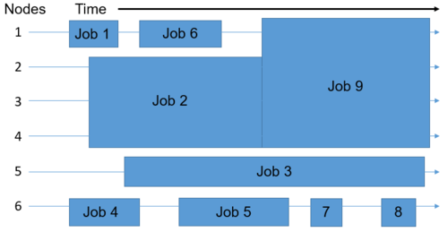

Review of Yesterday
Very briefly, yesterday after learning about storage best practices and various storage options available to UMich researchers, we gained direct experience using these options by transferring our dataset to our own Data Den and Turbo storage locations.
We learned about a broadly-available and very generous compute package available to UMich researchers - the UMRCP - and now we’ll take a few moments to briefly review that.

We also discussed HPC compute clusters managed by ARC and had some opportunities to use the Great Lakes cluster, utilizing some of the web-based connection methods.
We talked about a pattern that may be new to us. In order to really use the HPC cluster, we had to request the appropriate resources from the system ahead of time. Let’s take a few moments to briefly review our experiences there. Today we’ll extend this idea.
Today we’re going to discuss more in depth about additional, powerful methods for connecting to the Great Lakes cluster, requesting resources, and ultimately running jobs in a more reproducible and automatable way. We’ll add more concrete detail about how this works, and gain experience through our exercises.
Great Lakes HPC
Again, we’ll provide the link to ARC’s general overview page on Great Lakes here: https://arc.umich.edu/greatlakes/

Let’s not go there right now, but I’d just like to point out that there’s a good deal of informational resources available on ARC’s website.
A More Detailed Look at How Great Lakes Works

We may have briefly mentioned the concept of a login node and a worker node when getting acquainted with Great Lakes, but we kept the explanation minimal, and only stated the fact that resources must be specified ahead of time for our tasks. With this figure we can dive a bit deeper into how this works.
Software Modules Available on Great Lakes
For our benefit, ARC has made available a plethora of widely used and oft-requested software tools, via their module system. We may refer to this module system as LMOD. We won’t cover the details of how it works, however we’ll demonstrate their usage and get a feel for using these LMOD modules on Great Lakes in our exercises.
The usage is very simple:
module load <name-of-module> to enable a particular modulemodule unload <name-of-module> to disable that modulemodule purge to unload all modulesmodule keyword <keyword> to search the modules for a particular keywordmodule spider <name-of-module> to view all versions of a particular software - many different versions may be available
We’ll use these command-line methods for exploring and using LMOD modules in our exercises shortly, but it may also be helpful to later review this link to all software modules available on various ARC HPC clusters.
Exercise - Log in to Great Lakes using ssh
Following along with the instructor, we’ll all log in to the Great Lakes cluster using ssh. Once there, we’ll get a brief introduction to using the module system.
Scheduled Jobs

We’ve taken a look into how, but now we’re going to go a little deeper on the why aspect - why is the HPC cluster set up this way?
Remember, this infrastructure must support the entire university. This means that we need a system to provide resources in a controlled, efficient, and reasonably fair way.
By having formal mechanisms for requesting resources, and utilizing a job queue and a scheduler to allocate resources and assign them to jobs, we can achieve these goals.
Interactive and Scripted Jobs
We’ve gained a little experience with some types of interactive jobs, for instance during our RStudio demonstration or when we verified the file integrity of our BAMs with md5sum using the OpenOnDemand ‘Basic Desktop’ app. During that exercise, we mentioned that there are other ways of doing this, which we’ll introduce here.
We’ve just logged in using SSH to the Great Lakes HPC, and now we’re all interacting with the login node. Thinking back to yesterday when we were writing the README file, we were similarly interacting with the login node. We mentioned that we can’t do anything compute-intensive here, and instead offered the OpenOnDemand apps as an alternative.
What we didn’t discuss was that where we are now - on the login node - we have the ability to request resources and run jobs via the command line. These are the powerful abilities that we alluded to, and we have two ways of doing this - interactive and scripted jobs.
Interactive Jobs
When we speak of interactive jobs on the command line, what we really mean is that we request resources in a special way so that once they are granted, our shell will be ‘sent’ into a worker node, and we will be able to interact with a command-line interface that is running inside of our worker node. We’ll have all of our desired resources, and we’ll be able to execute our compute-intensive tasks in an interactive way.
In some of the educational material provided by ARC, a lot of times they will introduce this idea later on, or briefly mentioned as an aside. However, we want to introduce it right away, because it’s very useful as a starting point, and is a great way to ‘right-size’ your scripted jobs, which we’ll cover in a moment.
When would we want to run an interactive job?
- When we’re not quite sure about the resources needed
- When we want to verify that our commands will work correctly
- When runtimes are relatively short and commands are fairly straightforward
How do we launch an interactive job from the command line? See the example here:
srun --pty --job-name=${USER}_calculate_md5sum --account=bioinf_wkshp_class --partition standard --mem=2000 --cpus-per-task=1 --time=00:30:00 /bin/bash
Scripted Jobs
When we talk about scripted jobs, generally we mean that inside of a file we place commands that we want to run in order - a script - along with the resource requirements.
In this case, when the resources become available, the contents of the script are executed on a worker node. There is no interaction with the running job. Any feedback that we’d normally receive in the terminal, can go to a log file. We’ll see an example of this.
When would we want to run scripted jobs?
- When we’re confident that our script/processes are correct and do what we want
- When we’re confident that we are requesting adequate resources
- When we want reproducibility
- When we want scalability, we have the ability of creating many scripted jobs ahead of time, and launching them all at once
What does a scripted job look like? See the dropdown section here:
SBATCH example
#!/bin/bash
# The interpreter used to execute the script
#“#SBATCH” directives that convey submission options:
#SBATCH --job-name=Hello_SBATCH
#SBATCH --cpus-per-task=1
#SBATCH --nodes=1
#SBATCH --ntasks-per-node=1
#SBATCH --mem-per-cpu=400m
#SBATCH --time=00:05:00
#SBATCH --account=bioinf_wkshp_class
#SBATCH --partition=standard
#SBATCH --output=/nfs/turbo/umms-bioinf-wkshp/workshop/home/%u/sleeping_bear/logs/%x-%j.log
# The application(s) to execute along with its input arguments and options:
hostname
pwd
echo "Hello, SBATCH!"
sleep 60
Briefly, we place our resource requirements at the top of our file - the preamble - and then we place our scripted commands until the end of the file. Once we have our file written - our SBATCH file - we’ll launch it with the command sbatch. For example:
sbatch <name-of-SBATCH-file>
We’ll have a chance to try this in a moment, after we get warmed up with some interactive jobs.
Note: We’re just going to demonstrate some of the most salient bits of requesting resources. There are a lot more informational resources available at ARC’s SLURM user guide.
Exercise SBATCH Hello World
Following along with the instructor, we will inspect the hello_SBATCH.sh shell script that each of us have in our $WORKSHOP_HOME directory, review the preamble and body of it, and then submit it with sbatch. Once it is running, we will use squeue to view the status of the job. After it completes, we’ll view its log.
LS0tCnRpdGxlOiAiR3JlYXQgTGFrZXMgSFBDIENsdXN0ZXIiCmF1dGhvcjogIlVNIEJpb2luZm9ybWF0aWNzIENvcmUiCm91dHB1dDoKICAgICAgICBodG1sX2RvY3VtZW50OgogICAgICAgICAgICBpbmNsdWRlczoKICAgICAgICAgICAgICAgIGluX2hlYWRlcjogaGVhZGVyLmh0bWwKICAgICAgICAgICAgdGhlbWU6IHBhcGVyCiAgICAgICAgICAgIG51bWJlcl9zZWN0aW9uczogZmFsc2UKICAgICAgICAgICAgZmlnX2NhcHRpb246IHRydWUKICAgICAgICAgICAgbWFya2Rvd246IEdGTQogICAgICAgICAgICBjb2RlX2Rvd25sb2FkOiB0cnVlCi0tLQo8c3R5bGUgdHlwZT0idGV4dC9jc3MiPgpib2R5eyAvKiBOb3JtYWwgICovCiAgICAgIGZvbnQtc2l6ZTogMTRwdDsKICB9CnByZSB7CiAgZm9udC1zaXplOiAxMnB0Cn0KPC9zdHlsZT4KCkluIHRoaXMgbW9kdWxlLCB3ZSB3aWxsOgoKKiBkaXNjdXNzIHRoZSBHcmVhdCBMYWtlcyBIUEMgY2x1c3RlciBhbmQgcmV2aWV3IGl0cyB1c2FnZQoqIGRpc2N1c3Mgc29mdHdhcmUgbW9kdWxlcyBhdmFpbGFibGUgb24gR3JlYXQgTGFrZXMKKiBsb2cgaW4gdG8gdGhlIEdyZWF0IExha2VzIGNsdXN0ZXIgdXNpbmcgYHNzaGAKKiByZXZpZXcgc29tZSBvZiB0aGUgZnVuZGFtZW50YWwgaGVscGVyIGNvbW1hbmRzIG9uIEdyZWF0IExha2VzCiogcmV2aWV3IFNCQVRDSCBhbmQgc3VibWl0IGpvYnMgZm9yIG91ciBhbmFseXNpcwoKIyMgUmV2aWV3IG9mIFllc3RlcmRheQoKVmVyeSBicmllZmx5LCB5ZXN0ZXJkYXkgYWZ0ZXIgbGVhcm5pbmcgYWJvdXQgc3RvcmFnZSBiZXN0IHByYWN0aWNlcyBhbmQgdmFyaW91cyBzdG9yYWdlIG9wdGlvbnMgYXZhaWxhYmxlIHRvIFVNaWNoIHJlc2VhcmNoZXJzLCB3ZSBnYWluZWQgZGlyZWN0IGV4cGVyaWVuY2UgdXNpbmcgdGhlc2Ugb3B0aW9ucyBieSB0cmFuc2ZlcnJpbmcgb3VyIGRhdGFzZXQgdG8gb3VyIG93biBEYXRhIERlbiBhbmQgVHVyYm8gc3RvcmFnZSBsb2NhdGlvbnMuCgo8YnI+CgpXZSBsZWFybmVkIGFib3V0IGEgYnJvYWRseS1hdmFpbGFibGUgYW5kIHZlcnkgZ2VuZXJvdXMgY29tcHV0ZSBwYWNrYWdlIGF2YWlsYWJsZSB0byBVTWljaCByZXNlYXJjaGVycyAtIHRoZSBVTVJDUCAtIGFuZCBub3cgd2UnbGwgdGFrZSBhIGZldyBtb21lbnRzIHRvIGJyaWVmbHkgcmV2aWV3IHRoYXQuCgohW10oaW1hZ2VzL01vZHVsZTAxX1VNUkNQX3Byb3ZpZGVzLnBuZykKCjxicj4KCldlIGFsc28gZGlzY3Vzc2VkIEhQQyBjb21wdXRlIGNsdXN0ZXJzIG1hbmFnZWQgYnkgQVJDIGFuZCBoYWQgc29tZSBvcHBvcnR1bml0aWVzIHRvIHVzZSB0aGUgR3JlYXQgTGFrZXMgY2x1c3RlciwgIHV0aWxpemluZyBzb21lIG9mIHRoZSB3ZWItYmFzZWQgY29ubmVjdGlvbiBtZXRob2RzLgoKV2UgdGFsa2VkIGFib3V0IGEgcGF0dGVybiB0aGF0IG1heSBiZSBuZXcgdG8gdXMuIEluIG9yZGVyIHRvIHJlYWxseSB1c2UgdGhlIEhQQyBjbHVzdGVyLCB3ZSBoYWQgdG8gcmVxdWVzdCB0aGUgYXBwcm9wcmlhdGUgcmVzb3VyY2VzIGZyb20gdGhlIHN5c3RlbSBhaGVhZCBvZiB0aW1lLiBMZXQncyB0YWtlIGEgZmV3IG1vbWVudHMgdG8gYnJpZWZseSByZXZpZXcgb3VyIGV4cGVyaWVuY2VzIHRoZXJlLiBUb2RheSB3ZSdsbCBleHRlbmQgdGhpcyBpZGVhLgoKPGJyPgoKVG9kYXkgd2UncmUgZ29pbmcgdG8gZGlzY3VzcyBtb3JlIGluIGRlcHRoIGFib3V0IGFkZGl0aW9uYWwsIHBvd2VyZnVsIG1ldGhvZHMgZm9yIGNvbm5lY3RpbmcgdG8gdGhlIEdyZWF0IExha2VzIGNsdXN0ZXIsIHJlcXVlc3RpbmcgcmVzb3VyY2VzLCBhbmQgdWx0aW1hdGVseSBydW5uaW5nIGpvYnMgaW4gYSBtb3JlIHJlcHJvZHVjaWJsZSBhbmQgYXV0b21hdGFibGUgd2F5LiBXZSdsbCBhZGQgbW9yZSBjb25jcmV0ZSBkZXRhaWwgYWJvdXQgaG93IHRoaXMgd29ya3MsIGFuZCBnYWluIGV4cGVyaWVuY2UgdGhyb3VnaCBvdXIgZXhlcmNpc2VzLgoKIyMgR3JlYXQgTGFrZXMgSFBDCgpBZ2Fpbiwgd2UnbGwgcHJvdmlkZSB0aGUgbGluayB0byBBUkMncyBnZW5lcmFsIG92ZXJ2aWV3IHBhZ2Ugb24gR3JlYXQgTGFrZXMgaGVyZTogaHR0cHM6Ly9hcmMudW1pY2guZWR1L2dyZWF0bGFrZXMvCgohW10oaW1hZ2VzL01vZHVsZTAzYl9hcmNfc2l0ZV9uYXZiYXIucG5nKQoKTGV0J3Mgbm90IGdvIHRoZXJlIHJpZ2h0IG5vdywgYnV0IEknZCBqdXN0IGxpa2UgdG8gcG9pbnQgb3V0IHRoYXQgdGhlcmUncyBhIGdvb2QgZGVhbCBvZiBpbmZvcm1hdGlvbmFsIHJlc291cmNlcyBhdmFpbGFibGUgb24gQVJDJ3Mgd2Vic2l0ZS4KCjxicj4KPGJyPgo8YnI+CgojIyMgQSBNb3JlIERldGFpbGVkIExvb2sgYXQgSG93IEdyZWF0IExha2VzIFdvcmtzCiFbXShpbWFnZXMvTW9kdWxlMDNfY2x1c3Rlcl9vdmVydmlldy5wbmcpCgpXZSBtYXkgaGF2ZSBicmllZmx5IG1lbnRpb25lZCB0aGUgY29uY2VwdCBvZiBhIGxvZ2luIG5vZGUgYW5kIGEgd29ya2VyIG5vZGUgd2hlbiBnZXR0aW5nIGFjcXVhaW50ZWQgd2l0aCBHcmVhdCBMYWtlcywgYnV0IHdlIGtlcHQgdGhlIGV4cGxhbmF0aW9uIG1pbmltYWwsIGFuZCBvbmx5IHN0YXRlZCB0aGUgZmFjdCB0aGF0IHJlc291cmNlcyBtdXN0IGJlIHNwZWNpZmllZCBhaGVhZCBvZiB0aW1lIGZvciBvdXIgdGFza3MuIFdpdGggdGhpcyBmaWd1cmUgd2UgY2FuIGRpdmUgYSBiaXQgZGVlcGVyIGludG8gaG93IHRoaXMgd29ya3MuCgo8YnI+CgojIyMgU29mdHdhcmUgTW9kdWxlcyBBdmFpbGFibGUgb24gR3JlYXQgTGFrZXMKCkZvciBvdXIgYmVuZWZpdCwgQVJDIGhhcyBtYWRlIGF2YWlsYWJsZSBhIHBsZXRob3JhIG9mIHdpZGVseSB1c2VkIGFuZCBvZnQtcmVxdWVzdGVkIHNvZnR3YXJlIHRvb2xzLCB2aWEgdGhlaXIgbW9kdWxlIHN5c3RlbS4gV2UgbWF5IHJlZmVyIHRvIHRoaXMgbW9kdWxlIHN5c3RlbSBhcyBMTU9ELiBXZSB3b24ndCBjb3ZlciB0aGUgZGV0YWlscyBvZiBob3cgaXQgd29ya3M8IS0tIExJVkVfTk9URTogbm90ZSB3ZSB3aWxsIHJldmlzaXQgdGhpcyBpZGVhIHdoZW4gY29tcGFyaW5nIHdpdGggb3RoZXIgc29mdHdhcmUgbWFuYWdlbWVudCBzb2x1dGlvbnMgbGF0ZXIgLS0+LCBob3dldmVyIHdlJ2xsIGRlbW9uc3RyYXRlIHRoZWlyIHVzYWdlIGFuZCBnZXQgYSBmZWVsIGZvciB1c2luZyB0aGVzZSBMTU9EIG1vZHVsZXMgb24gR3JlYXQgTGFrZXMgaW4gb3VyIGV4ZXJjaXNlcy4KClRoZSB1c2FnZSBpcyB2ZXJ5IHNpbXBsZToKCi0gYG1vZHVsZSBsb2FkIDxuYW1lLW9mLW1vZHVsZT5gIHRvIGVuYWJsZSBhIHBhcnRpY3VsYXIgbW9kdWxlCi0gYG1vZHVsZSB1bmxvYWQgPG5hbWUtb2YtbW9kdWxlPmAgdG8gZGlzYWJsZSB0aGF0IG1vZHVsZQotIGBtb2R1bGUgcHVyZ2VgIHRvIHVubG9hZCBhbGwgbW9kdWxlcwotIGBtb2R1bGUga2V5d29yZCA8a2V5d29yZD5gIHRvIHNlYXJjaCB0aGUgbW9kdWxlcyBmb3IgYSBwYXJ0aWN1bGFyIGtleXdvcmQKLSBgbW9kdWxlIHNwaWRlciA8bmFtZS1vZi1tb2R1bGU+YCB0byB2aWV3IGFsbCB2ZXJzaW9ucyBvZiBhIHBhcnRpY3VsYXIgc29mdHdhcmUgLSBtYW55IGRpZmZlcmVudCB2ZXJzaW9ucyBtYXkgYmUgYXZhaWxhYmxlCgpXZSdsbCB1c2UgdGhlc2UgY29tbWFuZC1saW5lIG1ldGhvZHMgZm9yIGV4cGxvcmluZyBhbmQgdXNpbmcgTE1PRCBtb2R1bGVzIGluIG91ciBleGVyY2lzZXMgc2hvcnRseSwgYnV0IGl0IG1heSBhbHNvIGJlIGhlbHBmdWwgdG8gbGF0ZXIgcmV2aWV3IHRoaXMgW2xpbmsgdG8gYWxsIHNvZnR3YXJlIG1vZHVsZXMgYXZhaWxhYmxlIG9uIHZhcmlvdXMgQVJDIEhQQyBjbHVzdGVyc10oaHR0cHM6Ly9hcmMudW1pY2guZWR1L3NvZnR3YXJlLykuCgojIyMgRXhlcmNpc2UgLSBMb2cgaW4gdG8gR3JlYXQgTGFrZXMgdXNpbmcgc3NoCgpGb2xsb3dpbmcgYWxvbmcgd2l0aCB0aGUgaW5zdHJ1Y3Rvciwgd2UnbGwgYWxsIGxvZyBpbiB0byB0aGUgR3JlYXQgTGFrZXMgY2x1c3RlciB1c2luZyBzc2guIE9uY2UgdGhlcmUsIHdlJ2xsIGdldCBhIGJyaWVmIGludHJvZHVjdGlvbiB0byB1c2luZyB0aGUgbW9kdWxlIHN5c3RlbS4KCjxicj4KCiMjIyBTY2hlZHVsZWQgSm9icwoKIVtdKGltYWdlcy9Nb2R1bGUwM19zY2hlZHVsZWRfam9icy5wbmcpCgpXZSd2ZSB0YWtlbiBhIGxvb2sgaW50byBob3csIGJ1dCBub3cgd2UncmUgZ29pbmcgdG8gZ28gYSBsaXR0bGUgZGVlcGVyIG9uIHRoZSB3aHkgYXNwZWN0IC0gd2h5IGlzIHRoZSBIUEMgY2x1c3RlciBzZXQgdXAgdGhpcyB3YXk/IAoKUmVtZW1iZXIsIHRoaXMgaW5mcmFzdHJ1Y3R1cmUgbXVzdCBzdXBwb3J0IHRoZSBlbnRpcmUgdW5pdmVyc2l0eS4gVGhpcyBtZWFucyB0aGF0IHdlIG5lZWQgYSBzeXN0ZW0gdG8gcHJvdmlkZSByZXNvdXJjZXMgaW4gYSBjb250cm9sbGVkLCBlZmZpY2llbnQsIGFuZCByZWFzb25hYmx5IGZhaXIgd2F5LgoKQnkgaGF2aW5nIGZvcm1hbCBtZWNoYW5pc21zIGZvciByZXF1ZXN0aW5nIHJlc291cmNlcywgYW5kIHV0aWxpemluZyBhIGpvYiBxdWV1ZSBhbmQgYSBzY2hlZHVsZXIgdG8gYWxsb2NhdGUgcmVzb3VyY2VzIGFuZCBhc3NpZ24gdGhlbSB0byBqb2JzLCB3ZSBjYW4gYWNoaWV2ZSB0aGVzZSBnb2Fscy4KCjxicj4KCiMjIyBJbnRlcmFjdGl2ZSBhbmQgU2NyaXB0ZWQgSm9icwoKV2UndmUgZ2FpbmVkIGEgbGl0dGxlIGV4cGVyaWVuY2Ugd2l0aCBzb21lIHR5cGVzIG9mIGludGVyYWN0aXZlIGpvYnMsIGZvciBpbnN0YW5jZSBkdXJpbmcgb3VyIGBSU3R1ZGlvYCBkZW1vbnN0cmF0aW9uIG9yIHdoZW4gd2UgdmVyaWZpZWQgdGhlIGZpbGUgaW50ZWdyaXR5IG9mIG91ciBCQU1zIHdpdGggYG1kNXN1bWAgdXNpbmcgdGhlIE9wZW5PbkRlbWFuZCAnQmFzaWMgRGVza3RvcCcgYXBwLiBEdXJpbmcgdGhhdCBleGVyY2lzZSwgd2UgbWVudGlvbmVkIHRoYXQgdGhlcmUgYXJlIG90aGVyIHdheXMgb2YgZG9pbmcgdGhpcywgd2hpY2ggd2UnbGwgaW50cm9kdWNlIGhlcmUuCgpXZSd2ZSBqdXN0IGxvZ2dlZCBpbiB1c2luZyBTU0ggdG8gdGhlIEdyZWF0IExha2VzIEhQQywgYW5kIG5vdyB3ZSdyZSBhbGwgaW50ZXJhY3Rpbmcgd2l0aCB0aGUgbG9naW4gbm9kZS4gVGhpbmtpbmcgYmFjayB0byB5ZXN0ZXJkYXkgd2hlbiB3ZSB3ZXJlIHdyaXRpbmcgdGhlIFJFQURNRSBmaWxlLCB3ZSB3ZXJlIHNpbWlsYXJseSBpbnRlcmFjdGluZyB3aXRoIHRoZSBsb2dpbiBub2RlLiAgV2UgbWVudGlvbmVkIHRoYXQgd2UgY2FuJ3QgZG8gYW55dGhpbmcgY29tcHV0ZS1pbnRlbnNpdmUgaGVyZSwgYW5kIGluc3RlYWQgb2ZmZXJlZCB0aGUgT3Blbk9uRGVtYW5kIGFwcHMgYXMgYW4gYWx0ZXJuYXRpdmUuCgpXaGF0IHdlIGRpZG4ndCBkaXNjdXNzIHdhcyB0aGF0IHdoZXJlIHdlIGFyZSBub3cgLSBvbiB0aGUgbG9naW4gbm9kZSAtIHdlIGhhdmUgdGhlIGFiaWxpdHkgdG8gcmVxdWVzdCByZXNvdXJjZXMgYW5kIHJ1biBqb2JzIHZpYSB0aGUgY29tbWFuZCBsaW5lLiBUaGVzZSBhcmUgdGhlIHBvd2VyZnVsIGFiaWxpdGllcyB0aGF0IHdlIGFsbHVkZWQgdG8sIGFuZCB3ZSBoYXZlIHR3byB3YXlzIG9mIGRvaW5nIHRoaXMgLSBpbnRlcmFjdGl2ZSBhbmQgc2NyaXB0ZWQgam9icy4KCjwhLS0gTElWRV9OT1RFOiBUaGVzZSBhcmUgYm90aCBleGFtcGxlcyBvZiBzY2hlZHVsZWQgam9icywgZWl0aGVyIHdheSB3ZSdsbCByZXF1ZXN0IHJlc291cmNlcyBhbmQgdXNlIHRoZW0gb25jZSBncmFudGVkIC0tPgoKPGJyPgoKIyMjIEludGVyYWN0aXZlIEpvYnMKCldoZW4gd2Ugc3BlYWsgb2YgaW50ZXJhY3RpdmUgam9icyBvbiB0aGUgY29tbWFuZCBsaW5lLCB3aGF0IHdlIHJlYWxseSBtZWFuIGlzIHRoYXQgd2UgcmVxdWVzdCByZXNvdXJjZXMgaW4gYSBzcGVjaWFsIHdheSBzbyB0aGF0IG9uY2UgdGhleSBhcmUgZ3JhbnRlZCwgb3VyIHNoZWxsIHdpbGwgYmUgJ3NlbnQnIGludG8gYSB3b3JrZXIgbm9kZSwgYW5kIHdlIHdpbGwgYmUgYWJsZSB0byBpbnRlcmFjdCB3aXRoIGEgY29tbWFuZC1saW5lIGludGVyZmFjZSB0aGF0IGlzIHJ1bm5pbmcgaW5zaWRlIG9mIG91ciB3b3JrZXIgbm9kZS4gV2UnbGwgaGF2ZSBhbGwgb2Ygb3VyIGRlc2lyZWQgcmVzb3VyY2VzLCBhbmQgd2UnbGwgYmUgYWJsZSB0byBleGVjdXRlIG91ciBjb21wdXRlLWludGVuc2l2ZSB0YXNrcyBpbiBhbiBpbnRlcmFjdGl2ZSB3YXkuCgpJbiBzb21lIG9mIHRoZSBlZHVjYXRpb25hbCBtYXRlcmlhbCBwcm92aWRlZCBieSBBUkMsIGEgbG90IG9mIHRpbWVzIHRoZXkgd2lsbCBpbnRyb2R1Y2UgdGhpcyBpZGVhIGxhdGVyIG9uLCBvciBicmllZmx5IG1lbnRpb25lZCBhcyBhbiBhc2lkZS4gSG93ZXZlciwgd2Ugd2FudCB0byBpbnRyb2R1Y2UgaXQgcmlnaHQgYXdheSwgYmVjYXVzZSBpdCdzIHZlcnkgdXNlZnVsIGFzIGEgc3RhcnRpbmcgcG9pbnQsIGFuZCBpcyBhIGdyZWF0IHdheSB0byAncmlnaHQtc2l6ZScgeW91ciBzY3JpcHRlZCBqb2JzLCB3aGljaCB3ZSdsbCBjb3ZlciBpbiBhIG1vbWVudC4KCldoZW4gd291bGQgd2Ugd2FudCB0byBydW4gYW4gaW50ZXJhY3RpdmUgam9iPwoKLSBXaGVuIHdlJ3JlIG5vdCBxdWl0ZSBzdXJlIGFib3V0IHRoZSByZXNvdXJjZXMgbmVlZGVkCi0gV2hlbiB3ZSB3YW50IHRvIHZlcmlmeSB0aGF0IG91ciBjb21tYW5kcyB3aWxsIHdvcmsgY29ycmVjdGx5Ci0gV2hlbiBydW50aW1lcyBhcmUgcmVsYXRpdmVseSBzaG9ydCBhbmQgY29tbWFuZHMgYXJlIGZhaXJseSBzdHJhaWdodGZvcndhcmQKCjwhLS0gTElWRV9OT1RFOiBDb21tYW5kcyBpbnNpZGUgb2YgdGhlIGludGVyYWN0aXZlIGpvYiBtYXkgbGFjayByZXByb2R1Y2liaWxpdHksIHdlIGhhdmUgdG8gbWFudWFsbHkgcmVjb3JkIHdoYXQgd2UgZG8gd2l0aGluIHRoZSBpbnRlcmFjdGl2ZSBqb2IuIC0tPgoKSG93IGRvIHdlIGxhdW5jaCBhbiBpbnRlcmFjdGl2ZSBqb2IgZnJvbSB0aGUgY29tbWFuZCBsaW5lPyBTZWUgdGhlIGV4YW1wbGUgaGVyZToKCmBgYApzcnVuIC0tcHR5IC0tam9iLW5hbWU9JHtVU0VSfV9jYWxjdWxhdGVfbWQ1c3VtIC0tYWNjb3VudD1iaW9pbmZfd2tzaHBfY2xhc3MgLS1wYXJ0aXRpb24gc3RhbmRhcmQgLS1tZW09MjAwMCAtLWNwdXMtcGVyLXRhc2s9MSAtLXRpbWU9MDA6MzA6MDAgL2Jpbi9iYXNoCmBgYAoKPGJyPgoKIyMjIFNjcmlwdGVkIEpvYnMKCldoZW4gd2UgdGFsayBhYm91dCBzY3JpcHRlZCBqb2JzLCBnZW5lcmFsbHkgd2UgbWVhbiB0aGF0IGluc2lkZSBvZiBhIGZpbGUgd2UgcGxhY2UgY29tbWFuZHMgdGhhdCB3ZSB3YW50IHRvIHJ1biBpbiBvcmRlciAtIGEgc2NyaXB0IC0gYWxvbmcgd2l0aCB0aGUgcmVzb3VyY2UgcmVxdWlyZW1lbnRzLgoKSW4gdGhpcyBjYXNlLCB3aGVuIHRoZSByZXNvdXJjZXMgYmVjb21lIGF2YWlsYWJsZSwgdGhlIGNvbnRlbnRzIG9mIHRoZSBzY3JpcHQgYXJlIGV4ZWN1dGVkIG9uIGEgd29ya2VyIG5vZGUuIFRoZXJlIGlzIG5vIGludGVyYWN0aW9uIHdpdGggdGhlIHJ1bm5pbmcgam9iPCEtLSBMSVZFX05PVEU6IEV4Y2VwdCBtYXliZSB0byBvYnNlcnZlIGl0IC0tPi4gQW55IGZlZWRiYWNrIHRoYXQgd2UnZCBub3JtYWxseSByZWNlaXZlIGluIHRoZSB0ZXJtaW5hbCwgY2FuIGdvIHRvIGEgbG9nIGZpbGUuIFdlJ2xsIHNlZSBhbiBleGFtcGxlIG9mIHRoaXMuCgpXaGVuIHdvdWxkIHdlIHdhbnQgdG8gcnVuIHNjcmlwdGVkIGpvYnM/CgotIFdoZW4gd2UncmUgY29uZmlkZW50IHRoYXQgb3VyIHNjcmlwdC9wcm9jZXNzZXMgYXJlIGNvcnJlY3QgYW5kIGRvIHdoYXQgd2Ugd2FudAotIFdoZW4gd2UncmUgY29uZmlkZW50IHRoYXQgd2UgYXJlIHJlcXVlc3RpbmcgYWRlcXVhdGUgcmVzb3VyY2VzCi0gV2hlbiB3ZSB3YW50IHJlcHJvZHVjaWJpbGl0eQotIFdoZW4gd2Ugd2FudCBzY2FsYWJpbGl0eSwgd2UgaGF2ZSB0aGUgYWJpbGl0eSBvZiBjcmVhdGluZyBtYW55IHNjcmlwdGVkIGpvYnMgYWhlYWQgb2YgdGltZSwgYW5kIGxhdW5jaGluZyB0aGVtIGFsbCBhdCBvbmNlCgo8IS0tIExJVkVfTk9URTogVGhlcmUgYXJlIG1hbnkgc29sdXRpb25zIGZvciBzY2FsYWJpbGl0eSwgdGhhdCBjYW4gbGV2ZXJlZ2Ugc2NyaXB0ZWQgam9icyB3aXRob3V0IGFzIG11Y2ggdXBmcm9udCB3b3JrLiBDaHJpcyB3aWxsIGNvdmVyIHRoZXNlIHRvbW9ycm93IC0tPgoKV2hhdCBkb2VzIGEgc2NyaXB0ZWQgam9iIGxvb2sgbGlrZT8gU2VlIHRoZSBkcm9wZG93biBzZWN0aW9uIGhlcmU6Cgo8IS0tIExJVkVfTk9URTogV2UnbGwgc2VlIHRoaXMgaW4ganVzdCBhIG1vbWVudCwgbm8gbmVlZCB0byBsb29rIGF0IGl0IGhlcmUgLS0+Cgo8ZGV0YWlscz4KPHN1bW1hcnk+U0JBVENIIGV4YW1wbGU8L3N1bW1hcnk+CgpgYGAKIyEvYmluL2Jhc2gKIyBUaGUgaW50ZXJwcmV0ZXIgdXNlZCB0byBleGVjdXRlIHRoZSBzY3JpcHQKCiPigJwjU0JBVENI4oCdIGRpcmVjdGl2ZXMgdGhhdCBjb252ZXkgc3VibWlzc2lvbiBvcHRpb25zOgoKI1NCQVRDSCAtLWpvYi1uYW1lPUhlbGxvX1NCQVRDSAojU0JBVENIIC0tY3B1cy1wZXItdGFzaz0xCiNTQkFUQ0ggLS1ub2Rlcz0xCiNTQkFUQ0ggLS1udGFza3MtcGVyLW5vZGU9MQojU0JBVENIIC0tbWVtLXBlci1jcHU9NDAwbQojU0JBVENIIC0tdGltZT0wMDowNTowMAojU0JBVENIIC0tYWNjb3VudD1iaW9pbmZfd2tzaHBfY2xhc3MKI1NCQVRDSCAtLXBhcnRpdGlvbj1zdGFuZGFyZAojU0JBVENIIC0tb3V0cHV0PS9uZnMvdHVyYm8vdW1tcy1iaW9pbmYtd2tzaHAvd29ya3Nob3AvaG9tZS8ldS9zbGVlcGluZ19iZWFyL2xvZ3MvJXgtJWoubG9nCgojIFRoZSBhcHBsaWNhdGlvbihzKSB0byBleGVjdXRlIGFsb25nIHdpdGggaXRzIGlucHV0IGFyZ3VtZW50cyBhbmQgb3B0aW9uczoKCmhvc3RuYW1lCnB3ZAoKZWNobyAiSGVsbG8sIFNCQVRDSCEiCgpzbGVlcCA2MApgYGAKCjwvZGV0YWlscz4KCjxicj4KCkJyaWVmbHksIHdlIHBsYWNlIG91ciByZXNvdXJjZSByZXF1aXJlbWVudHMgYXQgdGhlIHRvcCBvZiBvdXIgZmlsZSAtIHRoZSBwcmVhbWJsZSAtIGFuZCB0aGVuIHdlIHBsYWNlIG91ciBzY3JpcHRlZCBjb21tYW5kcyB1bnRpbCB0aGUgZW5kIG9mIHRoZSBmaWxlLiBPbmNlIHdlIGhhdmUgb3VyIGZpbGUgd3JpdHRlbiAtIG91ciBTQkFUQ0ggZmlsZSAtIHdlJ2xsIGxhdW5jaCBpdCB3aXRoIHRoZSBjb21tYW5kIGBzYmF0Y2hgLiBGb3IgZXhhbXBsZToKCmBzYmF0Y2ggPG5hbWUtb2YtU0JBVENILWZpbGU+YAoKV2UnbGwgaGF2ZSBhIGNoYW5jZSB0byB0cnkgdGhpcyBpbiBhIG1vbWVudCwgYWZ0ZXIgd2UgZ2V0IHdhcm1lZCB1cCB3aXRoIHNvbWUgaW50ZXJhY3RpdmUgam9icy4KCj5Ob3RlOiBXZSdyZSBqdXN0IGdvaW5nIHRvIGRlbW9uc3RyYXRlIHNvbWUgb2YgdGhlIG1vc3Qgc2FsaWVudCBiaXRzIG9mIHJlcXVlc3RpbmcgcmVzb3VyY2VzLiBUaGVyZSBhcmUgYSBsb3QgbW9yZSBpbmZvcm1hdGlvbmFsIHJlc291cmNlcyBhdmFpbGFibGUgYXQgW0FSQydzIFNMVVJNIHVzZXIgZ3VpZGVdKGh0dHBzOi8vYXJjLnVtaWNoLmVkdS9ncmVhdGxha2VzL3NsdXJtLXVzZXItZ3VpZGUvKS4KCjxicj4KCiMjIEV4ZXJjaXNlIFNCQVRDSCBIZWxsbyBXb3JsZAoKRm9sbG93aW5nIGFsb25nIHdpdGggdGhlIGluc3RydWN0b3IsIHdlIHdpbGwgaW5zcGVjdCB0aGUgYGhlbGxvX1NCQVRDSC5zaGAgc2hlbGwgc2NyaXB0IHRoYXQgZWFjaCBvZiB1cyBoYXZlIGluIG91ciBgJFdPUktTSE9QX0hPTUVgIGRpcmVjdG9yeSwgcmV2aWV3IHRoZSBwcmVhbWJsZSBhbmQgYm9keSBvZiBpdCwgYW5kIHRoZW4gc3VibWl0IGl0IHdpdGggYHNiYXRjaGAuIE9uY2UgaXQgaXMgcnVubmluZywgd2Ugd2lsbCB1c2UgYHNxdWV1ZWAgdG8gdmlldyB0aGUgc3RhdHVzIG9mIHRoZSBqb2IuIEFmdGVyIGl0IGNvbXBsZXRlcywgd2UnbGwgdmlldyBpdHMgbG9nLgoKPGJyPgoKIyMgRXhlcmNpc2UgYHNydW5gIHdpdGggTE1PRCAtIEluZGV4aW5nIG91ciBCQU0gRmlsZXMKCkZvbGxvd2luZyBhbG9uZyB3aXRoIHRoZSBpbnN0cnVjdG9yLCB3ZSdsbCBsYXVuY2ggYW4gaW50ZXJhY3RpdmUgam9iIHdpdGggYHNydW5gLCBsb2FkIHRoZSBzYW10b29scyBtb2R1bGUsIGFuZCB1c2Ugc2FtdG9vbHMgdG8gaW5kZXggb3VyIEJBTSBmaWxlcy4gVGhpcyBpcyBhIHJlcXVpcmVkIHN0ZXAgZm9yIHNvbWUgb2Ygb3VyIGxhdGVyIHByb2Nlc3Nlcywgc28gd2UnbGwgdGFrZSBjYXJlIG9mIGl0IG5vdy4KCjxicj4KCiMjIEV4ZXJjaXNlIGBzcnVuYCB3aXRoIExNT0QgLSBGaWx0ZXJpbmcgb3VyIEJBTSBGaWxlcwoKRm9sbG93aW5nIGFsb25nIHdpdGggdGhlIGluc3RydWN0b3IsIHdlJ2xsIGxhdW5jaCBhbiBpbnRlcmFjdGl2ZSBqb2Igd2l0aCBgc3J1bmAsIGxvYWQgdGhlIHNhbXRvb2xzIG1vZHVsZSwgYW5kIHVzZSBzYW10b29scyB0byBmaWx0ZXIgb3VyIHNhbXBsZV9BIEJBTSBmaWxlIHRvIHNlbGVjdCBvbmx5IGFsaWdubWVudHMgZnJvbSBjaHJvbW9zb21lIDE5LgoKPGJyPgoKIyMgRXhlcmNpc2UgU0JBVENIIHdpdGggTE1PRCAtIEZpbHRlcmluZyBvdXIgQkFNIEZpbGVzIENvbnQnZAoKRm9sbG93aW5nIGFsb25nIHdpdGggdGhlIGluc3RydWN0b3IsIHdlJ2xsIGNyZWF0ZSBhbiBTQkFUQ0ggc2NyaXB0IHRoYXQgaXMgc2ltaWxhciB0byBvdXIgcHJldmlvdXMgYHNydW5gIGV4ZXJjaXNlLCBhbmQgdXNlIHRoYXQgdG8gZmlsdGVyIG91ciBzYW1wbGVfQiBCQU0gZmlsZSBpbiB0aGUgc2FtZSBmYXNoaW9uLiBXZSB3aWxsIGxhdW5jaCBpdCB3aXRoIGBzYmF0Y2hgIGFuZCBpbnNwZWN0IHRoZSByZXN1bHRzLiBJZiBpdCBpcyBzdWNjZXNzZnVsLCB3ZSB3aWxsIGNvbnRpbnVlIHRoaXMgZXhlcmNpc2UgYnkgY3JlYXRpbmcgYW5kIHJ1bm5pbmcgdHdvIG1vcmUgU0JBVENIIHNjcmlwdHMgZm9yIHNhbXBsZV9DIGFuZCBzYW1wbGVfRC4KCgp8IFtQcmV2aW91cyBsZXNzb25dKE1vZHVsZTAzYV9zbmVha19wZWVrX2dyZWF0X2xha2VzLmh0bWwpIHwgW1RvcCBvZiB0aGlzIGxlc3Nvbl0oI3RvcCkgfCBbTmV4dCBsZXNzb25dKE1vZHVsZTA0X3NvZnR3YXJlX21hbmFnZW1lbnRfY29uZGEuaHRtbCkgfAp8IDotLS0gfCA6LS0tLTogfCAtLS06IHwK